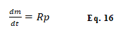

Sobre o projeto
O SimoBio é um projeto de trabalho de conclusão de curso de Engenharia de Bioprocessos e Biotecnologia da Unesp de Araraquara. A ideia do projeto é relativamente simples: desenvolver uma aplicação que sirva de interface gráfica para simular e modelar alguns processos fermentativos operando no modo batelada, de forma intuitiva.
Apesar da ideia ser simples, o projeto demanda uma extensa e variada base teórica, envolvendo conhecimentos de biotecnologia e matemática aplicada. Pensando nisso, esta página foi desenvolvida para introduzir alguns conceitos ao usuário do SiMoBio, além de auxiliar no uso do programa.
Documentação
Processo Fermentativo
A fermentação é um processo bioquímico de obtenção de energia onde microrganismos como bactérias, fungos e leveduras, realizam transformação de matéria orgânica, convertendo substrato em produto e liberando moléculas energeticamente carregadas que, por sua vez, possibilitam as atividades vitais durante o crescimento das células (GADEN, 2000). Um processo fermentativo pode ser conduzido de diversas formas tanto no que se diz respeito ao seu modo de operação, sendo ele em forma de batelada, batelada alimentada e processo contínuo, quanto na sua dimensão, podendo ser em escala laboratorial de bancada ou escala industrial (SCHMIDELL, W. et al, 2001).
O crescimento microbiano está diretamente relacionado com a geração do produto de interesse, já que estes são resultados do metabolismo das células em cultivo, e em um meio descontínuo como batelada é possível descrever o produto de uma fermentação de três formas distintas: metabólito primário, secundário e produto parcialmente associado ao crescimento (BLANCH, H.W.; CLARK, D.S., 1997). O metabólito primário é o produto associado ao crescimento celular, sua taxa de formação acompanha a taxa do crescimento microbiano. A produção de etanol demonstra um belo exemplo de metabólito primário, já que este é resultado direto do metabolismo de um açúcar redutor para obtenção de energia das células. O metabólito secundário não é associado ao crescimento celular, pois sua formação não está relacionada com funções essenciais para de crescimento, mas sim uma adaptação evolutiva para sua sobrevivência. O metabolismo secundário se inicia ao fim da trofofase e no início da idiofase, conhecidas respectivamente por serem as fases de crescimento logarítmico e estacionária. A terceira forma de descrever a formação do produto é o meio termo entre ambos os metabólitos citados anteriormente, logo o produto é parcialmente associado ao crescimento, ou seja, sua geração, apesar de não ocorrer simultaneamente ao crescimento celular, está relacionada a este (TORTORA, G.J., 2016).
As fases do crescimento microbiano podem ser descritas graficamente como mostra na figura 1. A fase lag representa o tempo de adaptação das células ao meio e, portanto, não há crescimento exponencial da biomassa. Esta fase ocorre somente quando os microrganismos inoculados proveem de um primeiro meio de cultura onde as células já passaram da fase exponencial e seus metabolismos apresentam certo déficit de nutrientes, sendo assim necessário se adaptarem à nova cultura. A fase log é a fase de crescimento exponencial dos microrganismos, conhecida também como trofofase. Ocorre quando os nutrientes presentes no meio superam e muito as necessidades básicas das células, permitindo que se desenvolvam plenamente. Nesta fase a velocidade específica de crescimento celular (μ) é constante, fazendo com que a curva se assemelhe à uma reta. A fase estacionária, conhecida como idiofase, ocorre ao fim da fase log quando os nutrientes, fontes de carbono e oxigênio já não são mais abundantes no meio e a formação de novas células passa a ser igual à morte das mesmas, mantendo a curva constante. Por fim, tem-se a fase de declínio, que representa o momento onde as mortes celulares superam o nascimento de novas células até chegar o momento em que a cultura se esteriliza (ALTERTHUM, F. et al, 2001).
Modelagens e Simulações Matemáticas
A modelagem matemática é uma técnica amplamente utilizada em diversas áreas da ciência para descrever e prever o comportamento de sistemas complexos. A primeira modelagem matemática conhecida foi proposta pelo matemático e filósofo grego Thales de Mileto, no século VI a.C. Ele utilizou conceitos matemáticos para prever o eclipse solar que ocorreu em 585 a.C. Thales observou que as sombras das árvores durante o dia mudavam de comprimento à medida que o sol se movia no céu e concluiu que o sol estava emitindo raios de luz que poderiam ser usados para prever eclipses, segundo Boyer, esta foi uma das primeiras tentativas de predizer um fenômeno natural a partir da matemática. Em 1654, Blaise Pascal e Pierre de Fermat desenvolveram a "Teoria da Probabilidade", que permitia a modelagem matemática com intuito de predizer eventos aleatórios. Essa teoria foi ampliada ao longo dos anos e tem sido usada em áreas como a estatística e a ciência da computação, permitindo que os modelos incorporem a incerteza e a variabilidade do mundo real (BOYER, 1996).
Na física, a modelagem matemática é uma ferramenta essencial para descrever o comportamento de sistemas físicos complexos. Em 1687, Isaac Newton publicou sua "Lei da Gravitação Universal", que descreveu matematicamente a força gravitacional entre dois corpos. Esse trabalho abriu caminho para a modelagem matemática de sistemas astronômicos e outros sistemas físicos complexos. Já na biologia, a modelagem matemática tem sido usada para entender e prever o comportamento de sistemas biológicos complexos, como redes neurais, sistemas imunológicos, populações de organismos e doenças infecciosas. No âmbito da engenharia, a modelagem matemática é frequentemente usada para projetar e otimizar sistemas e processos. Por exemplo, em 1960, Richard Bellman desenvolveu a técnica de "Programação Dinâmica", que permitiu a modelagem matemática de sistemas complexos com múltiplas etapas (BELLMAN, 1960). Mais recentemente, esta ferramenta tem sido aplicada na ciência da computação para a criação de algoritmos e a otimização de sistemas computacionais.
A simulação matemática é o processo de usar um modelo matemático para realizar simulações numéricas do sistema em questão. Isso envolve a resolução das equações matemáticas que compõem o modelo para simular o comportamento do sistema em diferentes condições. A simulação matemática pode ser usada para testar diferentes cenários e fazer previsões sobre o comportamento do sistema em diferentes condições, permitindo que os usuários avaliem o impacto de diferentes variáveis e tomem decisões informadas com base nesses resultados (RINO, J. P.; COSTA, B.V., 2011).
Modelagem de biorreatores operando em modo batelada
Em processos fermentativos os modelos cinéticos podem ser classificados com base no número de componentes celulares e quanto à heterogeneidade da população microbiana e em ambos os casos a divisão é feita em dois tipos (SCHMIDELL, W. et al, 2001). Para o número de componentes utilizados na representação celular os modelos cinéticos são divididos em “estruturados” e “não estruturados”. Os modelos estruturados são aqueles que consideram maiores detalhes das células, como componentes intracelulares e suas mudanças ao longo das adaptações ao meio. Já nos modelos não estruturados tais detalhes não são analisados, considerando a concentração celular como variável única. Quanto à classificação da heterogeneidade, a literatura os divide como “segregado” onde as células são divididas como indivíduos em uma população (considerando tempo de vida, tamanho e propriedades) e “não segregado”, considerando homogênea toda a população celular. Idealmente a modelagem cinética deveria ser realizada considerando o sistema como estruturado e segregado, no entanto, devido à alta complexidade e esforço computacional, convencionou-se a abordagem mais simples, onde se considera o sistema como não estruturado e não segmentado (NETO, 2004).
O balanço de massa é a aplicação prática da Lei de conservação da matéria proposta por Antonie L. Lavoisier (1743 - 1794) onde “na natureza nada se perde, nada se cria, tudo se transforma”. A partir do balanço de massa pode ser feito o equacionamento de diversos processos, sendo a base para a modelagem matemática dos processos fermentativos. De forma geral, é possível entender um balanço de massa como exemplificado na equação 1 (JÚNIOR, A.C.B., CRUZ, A.J.G., 2011). Em um biorreator operando no modo batelada a alimentação dos reagentes, no caso o inoculo das células juntamente ao meio de cultivo, é feito somente uma vez no início do processo, portanto não há entrada nem saída de qualquer elemento que componha a fermentação até que processo se encerre. Sendo assim o balanço de massa passa a assumir a forma demonstrada na equação 2.
As equações 3 e 4 descrevem a forma matemática de se interpretar o balanço de massa de um biorreator operando em modo batelada para um componente qualquer, interpretando o acúmulo como a variação mássica e a reação como o produto da velocidade de reação com o volume do sistema.
Balanço de massa para células
A partir das equações 3 e 4 do balanço de massa para biorreatores operando no modo batelada, é possível realizar a modelagem matemática responsável por predizer a variação das células no meio reacional. Considerando que há geração de biomassa ao longo do processo, e que também há morte celular, têm-se as equações 5, 6 e 7.
Onde V representa o volume do meio (L), rx sendo a velocidade de crescimento das células, representada pela equação 10 e rd a velocidade em que as mesmas morrem, representada pela equação 11. Considerando que o volume permanece constante ao longo de todo o processo, é possível rearranjar a equação 7, de tal forma a se obter a equação 8, onde há massa de células por volume, que nada mais é do que a concentração celular, representada pela equação 9.
Sendo Cx a concentração celular do meio (g/L), μ a velocidade específica de crescimento celular (h-1) e Kd a constante que representa a morte das células ao longo do processo fermentativo (h-1). Desta forma, chega-se na equação 12 que descreve a taxa de variação da biomassa no biorreator operando no modo batelada.
Balanço de massa para substrato
Seguindo o princípio do balanço de massa em biorreatores operando no modo batelada também é possível descrever o comportamento de um substrato limitante no processo fermentativo, como é mostrado na equação 13.
Onde Rs representa o termo de reação do substrato que está sendo consumido, portanto sua variação é negativa. De forma análoga ao balanço de massa realizado para as células, Rs é descrito como a velocidade de reação do substrato em um determinado volume constante. Sendo assim o balanço de massa para o substrato em biorreatores operando no modo batelada assume a equação 14.
Onde Cs é a concentração de substrato no meio. Segundo Segundo Congresso nacional de pesquisa e ensino em ciências (2016), a velocidade de reação do substrato pode ser representada como a velocidade de reação das células divida pela razão entre a variação da concentração celuar e a variação da concentração de substrato, onde em um processo batelada descreve o coeficiente de rendimento de células por substrato (Yx/s), encontrado empiricamente. Desta forma chega-se a equação 15 que representa a taxa de variação do substrato por tempo ao longo do processo.
Balanço de massa para produto
O balanço de massa para o produto gerado de um processo fermentativo em um biorreator operando no modo batelada segue as mesmas tendências dos feitos para estimar a concentração celular e de substrato, sendo representado pela equação 16.

Sendo Rp o termo de reação de formação de produto, considerando o volume do processo constante. Assim chega-se a equação 17 que define a variação da concentração de produto (Cp) em um determinado tempo.
A partir da equação X é possível caracterizar a velocidade de reação do produto com base na sua classificação metabólica, isto pois o metabólito quantificado pode ser primário, secundário ou parcialmente associado ao crescimento. Desta forma três equações diferenciais distintas surgem com o intuito de descrever a formação do produto de interesse. Para o metabólito primário, a velocidade de geração do produto rp está diretamente relacionada com o a velocidade de crescimento celular, como representado nas equações 18 e 19.
Desta forma a equação 19 descreve o comportamento da formação de metabólitos primários em um processo fermentativo, onde α se refere à constante quantitativa associada ao crescimento.
Já os metabólitos secundários estão diretamente relacionados com a concentração celular ao longo do processo. Sendo assim a geração dos produtos não associados ao crescimento é descrita pela equação 20.

A equação 21 representa o comportamento da formação de metabólitos secundários em um processo fermentativo, sendo β a constante quantitativa não associada ao crescimento. Por fim, os produtos parcialmente associados ao crescimento se apresentam matematicamente de tal forma a relacionar as equações de metabólitos primários e secundários, portanto a velocidade de geração do produto é descrito pela equação 22.
A equação 23 então define o comportamento da formação de produtos parcialmente associados ao crescimento celular em um processo fermentativo.
Modelos Cinéticos de Crescimento Microbiano
Os modelos cinéticos de crescimento microbianos são equações matemáticas capazes de apontar a taxa de crescimento específico de uma determinada cultura (ZANARDI, 2016). Jacques Monod foi o primeiro matemático a propor um modelo com o objetivo de estudar a cinética dos microrganismos (MONOD, 1049), como consequência, os demais modelos são modificações baseadas em seus estudos. Monod observou o crescimento exponencial em cultivos de microrganismos e os correlacionou com uma isoterma de adsorção ou com a equação de Michaelis-Menten de cinética enzimática, sugerindo desta forma o modelo expresso na equação 24.
Onde μmax representa a velocidade específica de crescimento máxima e Ks é a constante de semi-saturação. A equação apresenta a relação entre a concentração de substrato presente no meio com o momento em que sua concentração equivale a metade da inicial, indicando assim a velocidade específica de crescimento em um determinado momento (MONOD, 1949). O modelo indica o crescimento celular em função de um substrato limitante, ou seja, a redução do substrato está relacionada com o fim da etapa de crescimento celular. Apesar de não representar adequadamente o crescimento microbiano por não considerar quaisquer tipos de inibições, seja por substrato ou por produto, ou até mesmo o consumo de substrato durante as fases em que não há crescimento celular, o modelo de Monod pode ser útil para estimar situações específicas, além de ser responsável por determinar o ponto de partida para dedução de novos modelos capazes de abranger as diferentes condições do processo fermentativo (ZANARDI, 2016).
Os modelos variantes da equação proposta por Monod têm como objetivo contemplar as possíveis inibições que um cultivo apresenta. As concentrações de substrato ou produto normalmente são responsáveis por inibirem o crescimento celular em um determinado ponto. A inibição por substrato ocorre quando a concentração inicial do agente redutor é muito alta se comparada com o inoculo inicial do organismo, de tal forma a gerar um efeito tóxico para as células devido à pressão osmótica, causando inibição do crescimento celular. Andrews propôs um novo modelo, sugerindo a implementação do parâmetro empírico Ki, constante relativa à inibição por substrato, ao modelo de Monod, definindo a velocidade específica de crescimento como representado na equação 25. O modelo de Andrews indica uma fase lag prolongada na presença de altas concentrações de substrato, ou seja, há dificuldade por parte das células de se adaptarem ao meio (ANDREWS, 1968).
A inibição por produto ocorre quando o resultado do próprio metabolismo celular é gera efeito tóxico em determinada concentração como exemplo, a fermentações que tem como produto o álcool, que em altas concentrações é tóxico para as células que o produzem (ZANARDI, 2016). Levenspiel propôs um modelo, descrito na equação 26, onde a velocidade específica de crescimento celular age em função da concentração máxima de produto, de tal forma a cessar a formação de novas células e produto uma vez que esta concentração é atingida. Apesar de simples, este modelo apresenta boa eficiência na predição do crescimento celular com inibição por produto, a equação contém o parâmetro empírico n que dita o efeito inibitório, onde caso assuma o valor de 1, a velocidade específica de crescimento celular será uma função linear (LEVENSPIEL, 1980).
Evolução diferencial
A evolução diferencial (ED) é um algoritmo evolutivo baseado na teoria da evolução de Charles Darwin, simulando a seleção natural para uma base de dados que corresponde a uma população, tratando os dados como indivíduos, os parâmetros como genes e os resultados como cromossomos. Através de uma função objetiva (fitness function), o algoritmo aponta o individuo que melhor se enquadra no parâmetro proposto (fittest individual), sendo assim capaz de modelar equações matemáticas (CARVALHO, 2016).
A evolução diferencial é considerada mais simples do que o Algoritmo Genético (AG) no que diz respeito ao número de passos necessários para se completar o processo, no entanto é tão poderoso quanto (FILHO, 2018). O algoritmo parte de uma população inicial de vetores gerada aleatoriamente, que deve ser igual o maior a quatro, estes então serão submetidos à avaliação pela função objetiva, testando a afinidades dos vetores com a função a ser otimizada (CARVALHO, 2016). Em seguida são realizados os processos de mutação e crossover dos vetores, onde serão modificados com o objetivo de formar novos indivíduos, denominados vetores doadores, pela adição das diferenças ponderadas de dois indivíduos aleatórios da mesma geração. O cruzamento então é feito a partir da combinação do vetor doador, com um segundo vetor escolhido aleatoriamente, o vetor alvo, gerando assim o vetor experimental, ode ambos serão avaliados pela função objetiva de tal forma a determinar qual possui maior afinidade com a função de interesse, aquele que apresentar melhor resultado passará para a próxima geração atuando como vetor alvo. Segundo Filho (2018), o processo de evolução diferencial pode ser representado pelo fluxograma apresentado na figura 2.
Existem diferentes estratégias possíveis de se adotar no desenvolvimento da evolução diferencial que podem afetar no resultado final do algoritmo (SCIPY, v1.9.1). Estas seguem uma classificação do tipo a/b/c, onde “a” representa qual vetor será escolhido para próxima geração, podendo ser “rand”, escolha feita aleatoriamente, ou “best”, escolha feita tomando como base o individuo que apresentou melhor afinidade com a função a ser otimizada. O “b” representa o número de diferenças ponderadas que determinadas para obtenção de “a”, este podendo ser 1 ou 2. Já “c” representa qual será o cruzamento utilizado, podendo ser um cruzamento exponencial, “exp”, ou binomial, “bin”. (CARVALHO, 2016). Existem dez possíveis estratégias que a evolução diferencial pode adotar, apresentadas no quadro 1.
Algoritmo de Levenberg - Marquardt
O algoritmo de Levenberg-Marquardt é um método matemático que tem como objetivo solucionar sistemas não lineares pela otimização dos mínimos-quadrados. Proposto inicialmente por Levenberg como uma implementação do método de Gauss-Newton para solução de mínimos-quadrados introduzindo o parâmetro λk ≥ 0, garantindo assim boa definição quando JT(xk)J(xk) não é positivo (SCHWERTNER, 2019), obtendo a equação 27.
Onde J(x) refere à matriz jacobiana de R(x) e λ é a constante definida por Levenberg, denominada parâmetro de Levenberg-Marquardt ou parâmetro de damping. Posteriormente, Marquardt concluiu e provou que o teorema é bem definido, apontando uma solução única para cada iteração, ao atestar que conforme o parâmetro cresce no sistema representado na equação 27, dk tende a direção máxima de descida, ao mesmo tempo em que quando λ se aproxima de zero, a direção de minimização se aproximará à direção de Gauss-Newton (BENATTI, K.A; RIBEIRO, A.A., 2017).
Este algoritmo apresenta baixo custo computacional por se basear no teorema de Gauss-Newton, porém apresenta boa definição dos iterandos, no entanto esta definição não é suficiente para todas as situações, como por exemplo, problemas com sistemas mal escalados que se apresentam de forma desproporcional no que diz respeito às linhas ou colunas da matriz jacobiana (BENATTI, 2019). O algoritmo pode ainda ser acoplado ou utilizado em conjunto com demais métodos matemáticos que permitem a solução plena de problemas robustos que requerem otimização.
Como usar o app
Home
O aplicativo foi pensado para ser uma interface gráfica bem intuitiva e de fácil uso. Assim que aberto, o programa sempre estará na janela inicial “Home”. Aqui estará uma apresentação do programa e um botão denominado “Documentação”, este é responsável por encaminhar o usuário para está página, pensada para explicar melhor o projeto. A página será aberta a partir do navegador padrão da máquina do usuário.
No canto superior esquerdo fica o menu responsável por mostrar as possíveis páginas do programa, sendo elas a janela inicial “Home”, “Simulação” e “Modelagem”. Para acessá-las, basta clicar na opção desejada.
Simulação
Ao clicar em “Simulação”, o usuário será encaminhado para página onde deverá escolher o tipo de produto do processo que deseja simular. As opções estão dispostas na forma de botões onde cada uma delas os levará para página de escolha do modelo cinético de crescimento. Caso deseje retornar para página inicial ou ir para página de modelagem, basta acessar novamente o menu a esquerda.
Uma vez feito a escolha do produto, deverá agora escolher o modelo cinético possíveis do projeto, as opções também estarão disponíveis na forma de botões. Desta vez, caso o usuário queira retornar para as janelas anteriores, basta acessar o botão de voltar.
Com o tipo de produto e o modelo cinético escolhidos, será aberta a página para inserir os parâmetros e as condições do processo. Devido a forma que o aplicativo foi programado, é importante que os valores adicionados no formato de números decimais sejam representados por ponto (caractere “.”) ao invés de vírgula (caractere “,”), como mostrado no exemplo abaixo.
Assim que a simulação estiver pronta, abrirá uma janela pop-up contendo os resultados da mesma, estes estarão dispostos em três diferentes gráficos contendo a produtividade do processo, a simulação em si e a velocidade específica de crescimento celular. Caso desejado, é possível baixar os dados obtidos em um arquivo .xlsx que será salvo na pasta em que o programa se encontra.
Os gráficos são apresentados no modelo padrão da biblioteca MatPlotLib, sendo assim são interativos, podendo dar zoom em uma área específica, ajustar a forma de apresentação e salvar como imagem.
Modelagem
De forma análoga a simulação, na modelagem o usuário deverá escolher o tipo de produto e o modelo cinético de crescimento microbiano desejado. Desta vez, no entanto, ao invés de adicionar os parâmetros, o deverá ser feito o upload de um arquivo no formato .xlsx contendo os dados do processo, abrangendo o tempo, as concentrações celulares, de substrato e produto.
É importante que os dados do arquivo estejam dispostos em quatro colunas seguindo a ordem de tempo, concentração celular, concentração de substrato e concentração de produto, como mostrado no exemplo abaixo.
Uma vez escolhido o arquivo, será aberto uma caixa de diálogo confirmando a escolha e então oferecendo a opção de iniciar a modelagem. Devido à intensa matemática por trás do programa, pode haver um considerado esforço computacional e, portanto demorar alguns minutos para completar a modelagem (pode acontecer de o programa dizer que não está respondendo, mas basta esperar alguns instantes que o resultado será calculado).
Assim como na simulação, quando a modelagem estiver pronta, será aberta uma janela pop-up contendo os parâmetros do processo e os resultados gráficos.

Referências
ALTERTHUM, F.; et al. Biotecnologia industrial: Volume I, Fundamentos. São Paulo, SP, Brazil: Blucher, 2001.
ANDREWS, J. F. A mathematical model for the continuous culture of microorganisms utilizing inhibitory substrates. Biotechnology and Bioengineering, v. 10, n. 6, p. 707–723, nov. 1968. Disponível em: https://doi.org/10.1002/bit.260100602. Acesso em: 06 fev. 2023.
BELLMAN, R. Dynamic Programming. Princeton University Press, 1957.
BENATTI, K.A; RIBEIRO, A.A. O Método de Levenberg-Marquardt para o Problema de Quadrados Mínimos não Linear. In: SIMPÓSIO DE MÉTODOS NÚMERICOS EM ENGENHARIA, 2017. Curitiba: UFPR, 2017. Disponível em: https://eventos.ufpr.br/smne/SMNE2017/paper/viewFile/548/230. Acesso em: 09 fev. 2023.
BENATTI, K.A. O Método de Levenberg-Marquardt para o Problema de Quadrados Mínimos não Linear. Tese (Mestre em Matemática) – Setor de Ciências Exatas, Universidade Federal do Paraná (UFPR), 2019. Disponível em: https://acervodigital.ufpr.br/bitstream/handle/1884/47599/R%20-%20D%20-%20KLEBER%20ADERALDO%20BENATTI.pdf?sequence=1&isAllowed=y. Acesso em: 09 fev. 2023.
BLANCH, H. W.; CLARK, D. S. Biochemical Engineering, New York, Marcel Dekker Inc, 1997.
BOYER, C. B. História da matemática. 2. ed. São Paulo: Edgard Blucher, 1996.
CARVALHO, L.; et al. Evolução diferencial: características dos métodos de solução para a programação da produção em ambientes flow shop permutacional. In: ENCONTRO NACIONAL DE ENGENHARIA DE PRODUÇÃO XXVI, 2016. João Pessoa: UNESPAR, 2016. Disponível em: https://abepro.org.br/biblioteca/TN_STP_226_316_29021.pdf. Acesso em: 08 fev. 2023.
CONGRESSO NACIONAL DE PESQUISA E ENSINO EM CIÊNCIAS, 1., 2016, Campina Grande. Modelagem matemática, reatores biológicos, reator em batelada, perfis de concentração, perfis de concentração. Paraíba: Editora Realize, 2016. Disponível em: https://www.editorarealize.com.br/artigo/visualizar/18089. Acesso em: 12 ago. 2022.
FILHO, M.A.I. Análise de algoritmos genéticos e evolução diferencial para otimização de funções não-lineares multimodais. Trabalho de Conclusão de Curso (Bacharel em Engenharia Elétrica) – Departamento Acadêmico de Engenharia Elétrica, Universidade Tecnológica Federal do Paraná (UTFPR), 2018. Disponível em: https://repositorio.utfpr.edu.br/jspui/bitstream/1/16249/1/PG_COELE_2018_2_01.pdf. Acesso em: 08 fev. 2023.
Gaden, E.L. Fermentation process kinetics. Biotechnoly and Bioengeneering. v. 67: 629-635, 2000. Disponível em: https://doi.org/10.1002/(SICI)1097-0290(20000320)67:6<629::AID-BIT2>3.0.CO;2-P. Acesso em: 08 ago, 2022.
JÚNIOR, A.C.B.; CRUZ, A.J.G. Balanços de massa e energia na análise de processos químicos. São Carlos, SP, Brasil: Coleção UAB-UFSCar, 2011.
LEVENSPIEL, O. The monod equation: A revisit and a generalization to product inhibition situations. Biotechnology and Bioengineering, v. 22, n. 8, p. 1671–1687, ago. 1980. Disponível em: https://doi.org/10.1002/bit.260220810. Acesso em: 06 fev. 2023.
MONOD, J. The Growth of Bacterial Cultures. Annual Review of Microbiology, v. 3, n. 1, p. 371–394, out. 1949. Disponível em: https://www.annualreviews.org/doi/abs/10.1146/annurev.mi.03.100149.002103. Acesso em: 06 fev. 2023.
NETO, A.B. Estudo do processo de produção de ácido clavulânico por Streptomyces clavuligerus em cultivos contínuos com alta concentração celular. Tese (Doutorado em Engenharia Química) – Centro de Ciências Exatas e Tecnologia, Universidade Federal de São Carlos (UFSCar), 2004. Disponível em: https://repositorio.ufscar.br/bitstream/handle/ufscar/3922/TeseABN.pdf?sequence=1&isAllowed=y. Acesso em: 09 ago. 2022.
RINO, J. P.; COSTA, B.V. ABC da Simulação Computacional. São Paulo: Érica, 2011.
SCHMIDELL, W.; et al. Biotecnologia industrial: Volume II, Engenharia bioquímica. São Paulo, SP, Brasil: Blucher, 2001.
SCIPY. scipy.optimize.differential_evolution — SciPy v1.9.1 Manual. Disponível em: https://docs.scipy.org/doc/scipy/reference/generated/scipy.optimize.differential_evolution.html. Acesso em: 12 ago. 2022.
SCHWERTNER, A.E. O método de Levenberg-Marquardt para problemas de Otimização de Menor Valor Ordenado. Tese (Mestre em Matemática) – Centro de Ciências Exatas, Universidade Estadual de Maringá (UEM), 2019. Disponível em: http://repositorio.uem.br:8080/jspui/bitstream/1/5746/1/Anderson%20Ervino%20Schwertner_2019.pdf. Acesso em: 09 fev. 2023.
TORTORA, G. J.; FUNKE, B. R.; CASE, C. L. Microbiology: An introduction. 12. ed. Boston: Pearson, 2016.
ZANARDI, M. D. S.; et al. Descrição matemática e simulação de modelos cinéticos na produção de etanol. e-xacta, v. 9, n. 2, 30 nov. 2016. Disponível em: http://dx.doi.org/10.18674/exacta.v9i2.1762. Acesso em: 08 ago. 2022.